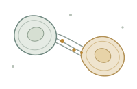

Previous research
See related publications
Cells and tissue repair
Cells & Tissue Repair
My previous work explored the roles of cells in fat grafting and tissue repair, with a focus on cell function, the extracellular matrix, and vascularization.
Research questions
How cells contribute to repair
I study the roles of stem cells in vascularization, graft retention, and tissue regeneration to understand how cell function relates to repair outcomes.
Which cellular functions can support more effective tissue repair?
Connecting cells and biomaterials
Building on cell research, I explore how the extracellular matrix and biomaterials can provide an environment that supports cell function.
How can cellular regenerative potential translate into more consistent repair outcomes?